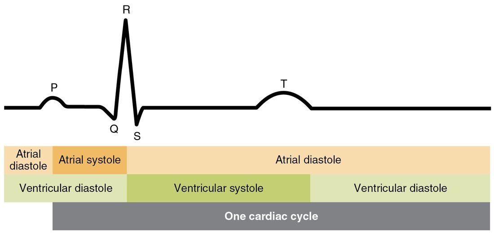
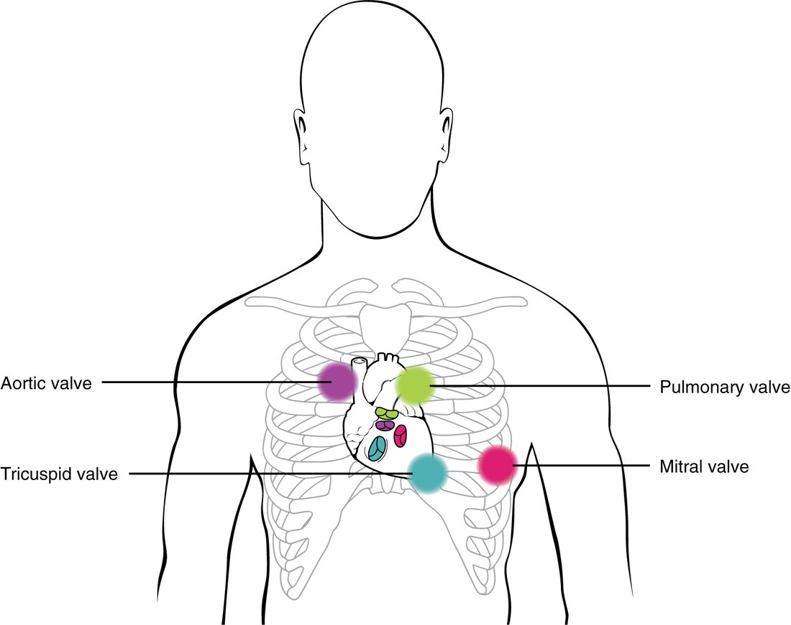

The cardiac cycle is everything that happens in your heart from the start of one beat to the start of the next. This page explains the phases of the cardiac cycle one at a time, then puts them together on a Wiggers diagram, the standard graph that lines up pressures, volume, the ECG and the heart sounds on one time axis. One rule runs through all of it: blood moves, and valves open and close, only because of differences in pressure.
One beat, on a clock
At a resting heart rate of 75 beats per minute, one cardiac cycle lasts 60 ÷ 75 = 0.8 second. You already know its two halves: systole, when a chamber contracts, and diastole, when it relaxes. The atria and the ventricles each have their own systole and diastole, offset in time.
- The atria contract for about 0.1 second and relax for the other 0.7 second.
- The ventricles contract for about 0.3 second and relax for the other 0.5 second.
So even at rest your ventricles spend more of each beat relaxing and filling than contracting. Keep that in mind; it matters when the heart speeds up.
The left and right sides go through the same phases at the same moment. The right side runs at much lower pressures, because the lungs' vessels resist flow far less than the rest of the body's. This page follows the left side; the right side does the same things at about one fifth of the pressure.
The valve rule
Think of a saloon door that swings only one way. Push from the correct side and it opens. Push from the other side and it slams shut against its frame. The door has no motor. What moves it is which side the push comes from.
Heart valves work the same way. They have no muscle and receive no nerve signals. Each one opens or closes only because of the pressure difference across it.
- A valve opens when the pressure behind it (upstream) is higher than the pressure in front of it (downstream). Blood flows down the pressure gradient and pushes the cusps aside.
- A valve closes when the pressure in front of it becomes higher than the pressure behind it. Blood starts to flow backward, catches the cusps, and pushes them shut.
Apply that to the two valves on each side of the heart.
| Valve | Opens when | Closes when |
|---|---|---|
| Mitral valve (left atrioventricular) | Left atrial pressure is higher than left ventricular pressure | Left ventricular pressure rises above left atrial pressure |
| Aortic valve (left semilunar) | Left ventricular pressure rises above aortic pressure | Aortic pressure is higher than left ventricular pressure |
The papillary muscles and chordae tendineae do not open the atrioventricular valves. They only stop the cusps from flipping backward into the atria once pressure has closed them. Every valve event in the rest of this page is this rule in action.
The five phases
The cycle has no true beginning, so start where the ventricles are relaxed and filling. Follow along on the Wiggers diagram (Figure 2) as you read each phase.
The same five phases are drawn as pictures of the heart in a circle (Figure 1). Notice in each one which valves are open.
![A circular diagram of one heartbeat with five drawings of the heart around it, each showing which chambers are contracting and which valves are open. Starting at the top and going clockwise: the atria contract; the ventricles begin to contract with all valves shut; the ventricles eject blood into the two great arteries; the ventricles relax with all valves shut; the ventricles fill. Small ECG tracings at the corners highlight the P wave, the QRS complex and the T wave. An inner ring marks atrial systole and diastole and ventricular systole and diastole.](../figures/os-19-27.jpg)
1. Ventricular filling
The ventricles are relaxed. Their pressure has fallen to a few mm Hg, lower than the pressure in the atria, which have been collecting blood from the veins. So the mitral valve is open. The aortic valve is closed, because aortic pressure (about 80 mm Hg or more) is far above ventricular pressure.
Blood flows from the veins, through the atria and straight into the ventricles. The flow is fastest at first, just after the mitral valve opens, and then slows as the ventricle fills and its pressure creeps up toward atrial pressure. About 80 percent of ventricular filling at rest happens this way, passively, before the atria contract at all.
2. Atrial contraction
The SA node fires, the P wave appears on the ECG, and a moment later the atria contract. This is atrial systole. Atrial pressure rises a little and pushes a final squirt of blood into the ventricles, topping them up. At rest this adds only about 20 percent of the ventricle's final volume. During exercise, when there is less time for passive filling, the atrial push becomes more important.
The atria have no valves at their entrances from the veins. When they contract, a little blood is pushed back into the veins as well as forward.
3. Isovolumetric contraction
The signal crosses the AV node, the QRS complex appears, and the ventricles begin to contract. Ventricular pressure rises above atrial pressure almost at once, so the mitral valve closes. That is the start of ventricular systole.
But ventricular pressure is still far below aortic pressure, so the aortic valve stays closed too. With both valves shut, blood has nowhere to go. The ventricle squeezes a fixed volume of blood, and its pressure climbs steeply. This is isovolumetric contraction (iso- = equal, volum- = volume, -metric = measure: the volume stays the same). You will also see it called isovolumic contraction. It lasts only about 0.05 second.
4. Ventricular ejection
When ventricular pressure rises above aortic pressure, about 80 mm Hg, the aortic valve opens and blood rushes into the aorta. This is ventricular ejection. Ventricular and aortic pressure rise together to a peak of about 120 mm Hg. Ejection is fastest at first and slows as the ventricle's muscle fibers shorten and begin to relax; the T wave appears during this later part.
The ventricle does not empty completely. At rest it ejects a bit more than half its blood.
5. Isovolumetric relaxation
The ventricle relaxes and its pressure falls. As soon as it drops below aortic pressure, blood in the aorta starts to flow back toward the ventricle, fills the aortic valve's cusps, and snaps the valve shut. That ends ventricular systole. The brief backflow and the sudden stop against the closed valve make a small dip and rebound in the aortic pressure trace, called the dicrotic notch (di- = two, krot- = beat: the pressure seems to beat twice).
Now both valves are closed again. The mitral valve is still shut, because ventricular pressure is still above atrial pressure. Volume stays constant while pressure plunges: isovolumetric relaxation (also called isovolumic relaxation). When ventricular pressure falls below atrial pressure, the mitral valve opens, and filling begins again.
Meanwhile, what keeps blood flowing into your tissues while the aortic valve is shut? During ejection, the aorta's elastic wall stretched to hold the incoming blood. During diastole it recoils and keeps pushing blood onward, so aortic pressure falls only slowly, from about 120 to about 80 mm Hg, instead of dropping to zero.
| Phase | Mitral valve | Aortic valve | Ventricular volume | Ventricular pressure |
|---|---|---|---|---|
| 1. Ventricular filling | Open | Closed | Rising | Low, rising slightly |
| 2. Atrial contraction | Open | Closed | Rising to its maximum | Low, rising slightly |
| 3. Isovolumetric contraction | Closed | Closed | Constant at its maximum | Rising steeply |
| 4. Ventricular ejection | Closed | Open | Falling to its minimum | High: rises to a peak, then falls |
| 5. Isovolumetric relaxation | Closed | Closed | Constant at its minimum | Falling steeply |
Reading the Wiggers diagram
The Wiggers diagram stacks several traces on one time axis, so you can see cause and effect line up.
Use it like this.
- Find the crossings. Each valve opens or closes exactly where two pressure traces cross. Left ventricular pressure crossing above left atrial pressure closes the mitral valve. Crossing above aortic pressure opens the aortic valve. Falling below aortic pressure closes the aortic valve. Falling below atrial pressure opens the mitral valve.
- Check the volume trace. Volume is flat between the first two crossings and between the last two. Those flat stretches are the two isovolumetric phases, when both valves are closed.
- Line up the ECG. Each electrical event comes just before the mechanical event it triggers: the P wave before atrial contraction, the QRS complex before ventricular pressure rises, and the T wave before the ventricle relaxes.
- Line up the sounds. The first heart sound sits at mitral valve closure and the second at aortic valve closure.
Now try the same reading on a second version of the diagram (Figure 3). Find where the ventricular trace crosses the aortic trace and the atrial trace, and name the valve event at each crossing.
![A graph of pressure in mm Hg over one heartbeat, with three traces. Aortic pressure falls slowly to about 80, rises with ventricular pressure to about 120, dips at a notch where the aortic valve closes, then falls slowly. Ventricular pressure is near zero, rises steeply after the mitral valve closes, crosses aortic pressure where the aortic valve opens, peaks near 120, and falls steeply below atrial pressure where the mitral valve opens. Atrial pressure stays below about 10 with small bumps. Below the graph, a heart sounds trace shows the first sound, lub, at mitral valve closure, the second, dub, at aortic valve closure, and a faint third sound early in filling.](../figures/os-19-29.jpg)
To see just the timing of systole and diastole against the ECG, use a simpler chart (Figure 4). Notice that ventricular systole starts at the QRS complex and ends near the end of the T wave, and that atrial systole ends as ventricular systole begins.

Heart sounds
Put a stethoscope on your chest and you hear two sounds each beat: a longer, lower "lub" and a shorter, sharper "dub". Together they are the classic lub-dub.
- The first heart sound, S1 ("lub"), comes from closure of the atrioventricular valves (mitral and tricuspid) at the start of isovolumetric contraction. It marks the start of ventricular systole.
- The second heart sound, S2 ("dub"), comes from closure of the semilunar valves (aortic and pulmonary) at the start of isovolumetric relaxation. It marks the end of ventricular systole.
So the gap from lub to dub is ventricular systole, and the longer gap from dub to the next lub is ventricular diastole.
What makes the sound is not the thin cusps slapping together. When a valve closes, the moving column of blood behind it is stopped suddenly. That abrupt stop sets the blood, the valve cusps and the chamber walls vibrating together, and you hear the vibration.
Two fainter sounds can sometimes be heard in diastole.
- S3 comes early in diastole, during the fast early filling, when blood rushing in is suddenly slowed by the ventricle wall. It is normal in children and young adults. In an older adult it suggests an overfilled ventricle.
- S4 comes just before S1, during atrial contraction, when the atria push blood into a stiff ventricle that resists filling. It is usually a sign of disease.
Each valve is best heard at a spot on the chest where its sound travels to the surface most clearly, which is not directly over the valve itself (Figure 5). The aortic valve is heard at the right edge of the sternum in the second intercostal space, the pulmonary valve at the left edge of the sternum in the second intercostal space, the tricuspid valve at the lower left edge of the sternum, and the mitral valve at the apex, in the fifth intercostal space in line with the middle of the left clavicle.

Murmurs
Blood moving smoothly through an open valve is silent. A murmur is the whooshing sound of turbulent flow, where blood swirls and eddies instead of flowing in smooth layers. Most murmurs in adults come from one of two valve problems.
- Stenosis (sten- = narrow, -osis = condition): the valve does not open fully, so blood is forced through a narrow opening at high speed.
- Regurgitation (re- = back, gurgit- = flood; also called insufficiency): the valve does not close fully, so blood leaks backward through it.
Timing tells you which. A murmur between S1 and S2 happens in ventricular systole: blood is being forced out through a narrowed aortic or pulmonary valve, or leaking back through a mitral or tricuspid valve that should be shut. A murmur between S2 and the next S1 happens in diastole: blood is leaking back through an aortic or pulmonary valve, or squeezing through a narrowed mitral or tricuspid valve. Not every murmur means disease. Fast, turbulent flow through normal valves can make a harmless murmur, common in children and during pregnancy.
End-diastolic and end-systolic volume
Two volumes on the Wiggers diagram get their own names, because everything about how much the heart pumps is built from them.
- End-diastolic volume (EDV) is the volume of blood in a ventricle at the end of diastole, just before it contracts: the fullest it gets. At rest it is about 120 mL.
- End-systolic volume (ESV) is the volume left in a ventricle at the end of systole, just after ejection: the emptiest it gets. At rest it is about 50 mL.
The ventricle never empties completely. The blood left behind at ESV is a reserve: a stronger contraction can eject more of it.
Stroke volume and ejection fraction
How much blood leaves the ventricle with each beat? Subtract what is left from what was there.
Stroke volume (SV) is the volume of blood one ventricle ejects in one beat:
SV = EDV − ESV
Ejection fraction (EF) is the share of the end-diastolic volume that is ejected, written as a percentage:
EF = SV ÷ EDV × 100
Worked example 1: a healthy heart at rest. A left ventricle has an EDV of 120 mL and an ESV of 50 mL.
- Stroke volume: SV = EDV − ESV = 120 mL − 50 mL = 70 mL.
- Ejection fraction: EF = SV ÷ EDV × 100 = 70 ÷ 120 × 100.
- 70 ÷ 120 = 0.583, and 0.583 × 100 = 58 percent.
This ventricle ejects 70 mL per beat, 58 percent of what it held. A normal left ventricular ejection fraction is about 50 to 70 percent.
Worked example 2: a weakened heart. After a large myocardial infarction, a patient's left ventricle has an EDV of 180 mL and an ESV of 120 mL.
- Stroke volume: SV = 180 mL − 120 mL = 60 mL.
- Ejection fraction: EF = 60 ÷ 180 × 100.
- 60 ÷ 180 = 0.333, and 0.333 × 100 = 33 percent.
Notice what the numbers show. The stroke volume, 60 mL, is only a little below normal, because the damaged ventricle has stretched and holds more blood. But it ejects only a third of its contents. Ejection fraction exposes the weakness that stroke volume alone hides, which is why ejection fraction is the number clinicians use to judge how well a ventricle empties. An ejection fraction below about 40 percent is clearly reduced.
You can also work backward. If SV = 70 mL and EF = 50 percent, then EDV = SV ÷ EF = 70 ÷ 0.50 = 140 mL, and ESV = 140 − 70 = 70 mL.
The pressure–volume loop
The Wiggers diagram plots everything against time. A pressure–volume loop drops time and plots left ventricular pressure against left ventricular volume instead (Figure 6). Each beat traces one closed loop, counterclockwise.
Walk around it from the bottom right.
- Corner A, bottom right: the ventricle is full (EDV, 120 mL) and the mitral valve closes.
- Right side, A to B: isovolumetric contraction. Pressure rises from about 10 to 80 mm Hg with no change in volume, so the line goes straight up.
- Corner B: the aortic valve opens.
- Top, B to C: ejection. Volume falls from 120 to 50 mL while pressure rises to about 120 mm Hg and then falls.
- Corner C, top left: the aortic valve closes, at ESV.
- Left side, C to D: isovolumetric relaxation. Pressure falls straight down with no change in volume.
- Corner D: the mitral valve opens.
- Bottom, D to A: filling. Volume rises from 50 back to 120 mL at low pressure.
The loop makes three quantities visible at a glance. Its right edge is EDV, its left edge is ESV, and its width is the stroke volume. The area inside the loop is the work the ventricle does on the blood in one beat.
When a valve narrows: aortic stenosis
Put the whole topic to work on one disease. In aortic stenosis, the aortic valve's cusps stiffen and thicken, most often with age as calcium deposits build up, so the valve no longer opens fully. Follow the chain.
- The opening through the valve is narrower, so it resists flow much more.
- During ejection, the left ventricle must generate a much higher pressure than normal to drive blood through the narrowed opening. A large pressure difference develops between the ventricle and the aorta, where normally the two pressures run almost together.
- Blood jets through the narrow opening at high speed and becomes turbulent, so a murmur is heard between S1 and S2.
- If the narrowing is severe, less blood gets out in the time available, so ESV rises and stroke volume falls.
- Over months and years, working against the higher pressure makes the left ventricular wall thicken, just as you saw for the normal left ventricle compared with the right.
On a pressure–volume loop, severe aortic stenosis makes the loop taller, because peak pressure rises, and narrower, because stroke volume falls.
Putting it together
Valves open and close only because of pressure differences across them. The ventricles fill mostly passively, then get topped up by atrial contraction. Isovolumetric contraction raises pressure with all valves closed until the aortic valve opens; ejection sends the stroke volume out; isovolumetric relaxation drops pressure with all valves closed until the mitral valve opens again. S1 is atrioventricular valve closure and S2 is semilunar valve closure; murmurs are turbulent flow through a narrowed or leaking valve. SV = EDV − ESV (about 120 − 50 = 70 mL at rest), and EF = SV ÷ EDV (about 58 percent). The pressure–volume loop shows the same beat as a counterclockwise loop whose width is the stroke volume.